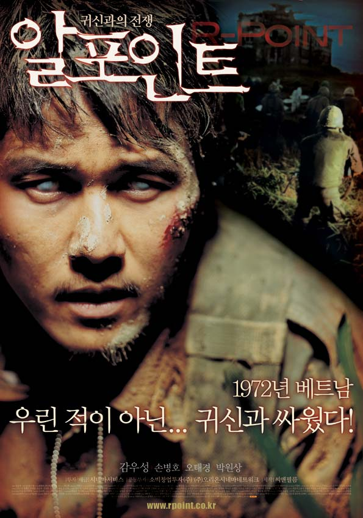

알포인트

1972년, 베트남 전쟁의 막바지,
200명의 부대원 중, 혼자 살아 남은 혼바우 전투의 생존자 최태인 중위는 악몽에 시달리며 괴로워한다.
그러나 그의 본대 복귀 요청은 철회되고, CID 부대장(기주봉)은 그에게 비밀 수색 명령을 내린다.
72년 2월 2일 밤 10시. 이날도 사단본부 통신부대의 무전기엔 "당나귀 삼공..."을 외치는 비명이 들어오고 있다.
6개월 전 작전 지역명 '로미오 포인트'에서 사망한 것으로 추정되는 18명의 수색대원들로부터 계속적인 구조요청이 오고 있었던 것.
그 흔적 없는 병사들의 생사를 확인할 수 있는 증거물을 확보하는 것이 이번 작전의 목표다.
3일 후, 좌표 63도 32분, 53도 27분 _ 로미오 포인트 입구.
어둠이 밀려오는 밀림으로 들어가는 9명의 병사들 뒤로 나뭇잎에 가려졌던 낡은 비문이 드러난다.
손에 피 묻은 자, 돌아갈 수 없다!! 7일간의 작전, 첫 야영지엔 10명의 병사가 보이고...
그러나 이제 하루가 시작되고 있을 뿐이다.